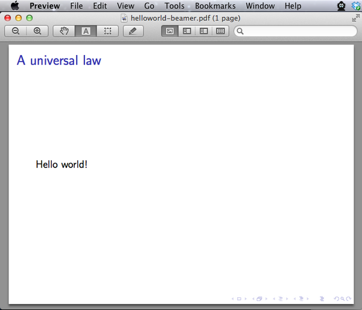
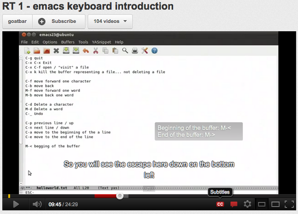
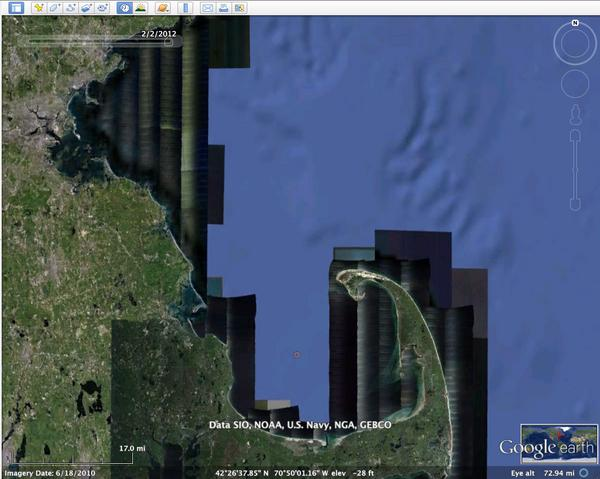
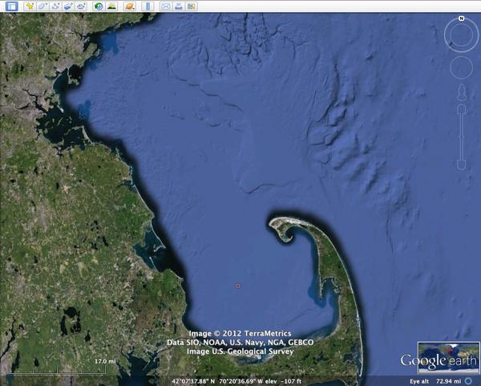
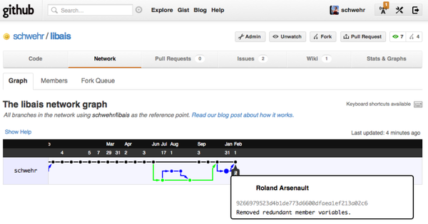

02.26.2012 15:25
CS + X, for all X
CS +
X, for all X by Alfred Spector on Xconomy found via Chris
DiBona: Feb
2, 2012 via Life at Google/
Written by a Google GIS Data engineer and Affiliate Faculty member at UNH with the Center for Coastal and Ocean Mapping, Earth Science and Computer Science.
Classes/2011/esci895-researchtools
Microsoft office, webmail, and g+/twitter/facebook/linkedin/etc are not enough to get you understanding the power of information technology. You'll need to have basic understanding of some sort of coding, managing data (software engineering + more) and the legal issues of copyright & patents. For additional reading, see To learn how the Internet works is to learn civics (Teach not coding but architecture) and Stifling Innovation on patents.
My oppinions are my own and nobody else's fault.
... So, this leads to a natural implication for students: Make sure you deeply understand information technology. This doesn't mean just understanding how to use a search engine or a word processor. It doesn't mean that you have spent years playing computer games or using social networks. It means instead developing an understanding of the basics of computer science (which includes at least some programming in a programming language of your choice). It means also that, that no matter what your field of study, you should focus on learning where computer science will hybridize with it to produce great progress. For many years, I've argued that the action in most disciplines, X, will be at the front line where computer science meets that discipline: In short-hand CS + X, for all X. ...Back when I was an undergrad, I tried to cross geology and computer science. I was informed by a Dean of Engineering that it just did not make sense as an undergrad to cross computer science and earth science. Back when I was done with the Geology coursework, 1/2 way trough a BS CS and 1/2 way through a MS CS, my buddy Hans Thomas at NASA Ames (now at MBARI), offered me a job at NASA Ames working on robots to do Mars geology. The offer came at the same time as my next graduate engineering tuition bill. Needless to say, I grabbed that BS Geology and started getting paychecks. For me, it was CS + >-geology and I have been paid to do that very thing for most of my career. My Research Tools course at UNH was a first try of helping students add "+ CS" to their marine geology, hydrography or ocean engineering degree. I think the concept of a minor in college is rather awkward, but adding CS to what you do is likely to greatly improve your chances of getting a job after your time at a University. For the folks who are naysayers that there is no theory in my course material, I beg to differ. There is computer security, cryptography, regular expressions (a.k.a. compiler theory), relational databases, spatial data structures/representations, workflows, software engineering and more all wrapped up in a practical candy coating.
Written by a Google GIS Data engineer and Affiliate Faculty member at UNH with the Center for Coastal and Ocean Mapping, Earth Science and Computer Science.
Classes/2011/esci895-researchtools
Microsoft office, webmail, and g+/twitter/facebook/linkedin/etc are not enough to get you understanding the power of information technology. You'll need to have basic understanding of some sort of coding, managing data (software engineering + more) and the legal issues of copyright & patents. For additional reading, see To learn how the Internet works is to learn civics (Teach not coding but architecture) and Stifling Innovation on patents.
My oppinions are my own and nobody else's fault.
02.26.2012 13:07
Computer Vision
I haven't put any time into computer
vision since 1999, so it was really great to get to watch this
video by Steve
Seitz. I finally understand why I hadn't learned about graph
cut (Wikipedia), which some people have talked about to great
lengths around me without really explaining what it is. It was also
great to have Tomasi's work in context. I really enjoyed (but
didn't totally understand) Carlo's Math for Robots and Computer
Vision back in 1994 or 95.
Talk slides: 3Dhistory.pdf
Talk slides: 3Dhistory.pdf
02.20.2012 21:11
Mac OSX frame grabber command line
Since Mac OSX 10.2 (back in 2004),
Mac OSX has had screencapture to grab the screen (man
screencapture), but it has always bothered me that the mac does
not have a built in command line interface to grab frames from an
attached or built in camera. A number of people have written this
type of program for the mac over the years and a number of
companies sell this. I just ran into ImageSnap,
which is a public domain program. It's built around XCode and after
using XCode a bunch of the last two years, I have to say that XCode
drives me nuts. The UI is always changing and it hides what's going
on (not a good thing for C, ObjC and C++). And that makes building
much more complicated than it needs to be. I've taken version 0.2.5
and reworked it a bit to create macframegrab on
github. I created a super simple Makefile and did a first pass on
cleaning up the formatting of the code (XCode makes a mess of
tabs/spaces/indents). Now I just need to rework the command line
arg parse to do GNU style command lines and package it in fink. I
also want to re-organize things a bit.
All this from bumping into OS taking a photo with the iSight using a command-line tool? because of Dr. Drang posting aobut screencapture in his Snapflickr update
Frame grabbing in linux with a BT848 chipset back in the late 1990's was soooo much easier. Just open /dev/somethingorother.ppm and read the image from the camera. Apple, are you listening? You could make grabbing frames from the camera that easy. Really.
Now I need to find time to go play with my GoPro and FitPC.
I did some time lapse movies back 7 years ago: Core 1 sample photos and movie...
And check out Core on Deck!:The Journey of how the Samples travel from the Rig Floor to the Core Lab
All this from bumping into OS taking a photo with the iSight using a command-line tool? because of Dr. Drang posting aobut screencapture in his Snapflickr update
Frame grabbing in linux with a BT848 chipset back in the late 1990's was soooo much easier. Just open /dev/somethingorother.ppm and read the image from the camera. Apple, are you listening? You could make grabbing frames from the camera that easy. Really.
Now I need to find time to go play with my GoPro and FitPC.
I did some time lapse movies back 7 years ago: Core 1 sample photos and movie...
And check out Core on Deck!:The Journey of how the Samples travel from the Rig Floor to the Core Lab
02.19.2012 22:10
LaTeX Beamer - slide shows without requiring a GUI
I know, I know. I work for Google and
I should be making "decks" in Google Docs with the Presentation
tool. I've been doing that, but life would not be complete if I
never tried making a LaTeX beamer presentation. Beamer, LaTeX, org
and related are for those people who truly value the concept of
creating content without worrying about the form. Content over form
for sure. Sometimes the planets align (or I just had enough red
wine) to step from the known to the undefined of the new. That,
plus a blip in my RSS feeds,
Using Beamer Animations to simulate Terminal Input and
OutputSo, I've finally taken the step. I was really impressed
with Dan Pineo's thesis presentations done with Beamer while he was
doing his PhD. Now I need to take the plung and get emacspeak
sending org to my Google docs account.
I used A Beamer Quickstart by Rouben Rostamian. Latex is not my favorite markup as I definitely prefer org-mode, but I feel more complete now.
And yes, you can do beamer right from org mode. Just ask it to!
I used A Beamer Quickstart by Rouben Rostamian. Latex is not my favorite markup as I definitely prefer org-mode, but I feel more complete now.
% -*- compile-command: "pdflatex helloworld-beamer.tex && open helloworld-beamer.pdf" -*-
\documentclass{beamer}
\usetheme{default}
\begin{document}
\begin{frame}{A universal law}
Hello world!
\end{frame}
\end{document}
Hello world is the universal constant. Put the above into a file
called helloworld-beamer.tex in emacs and use M-x compile (if you
are on a Mac), so view the results. On linux, change open to
xdg-open.
And yes, you can do beamer right from org mode. Just ask it to!
#+LaTeX_CLASS: beamer * A universal constant -Hello worldThen just do C-c C-e d and you'll be looking at a PDF of your presentation. I expected there to be an export to beamer under the latex options, but alas, I was surprised to see that you have to set beamer as an option.
02.18.2012 18:36
Healy ice breaker time lapse movies
I finally got around to making a
time lapse
movie for 2011 and a 2nd movie for the first month
and a half of 2012 for the USCGC Healy ice breaker. The 2nd
video includes the Healy providing an escort for a fuel ship into
Nome, AK.
All of 2011:
A month and a half at the beginning of 2012:
The USCG has a video online showing the escort work from down lown that includes audio of ice breaking.
All of 2011:
A month and a half at the beginning of 2012:
The USCG has a video online showing the escort work from down lown that includes audio of ice breaking.
02.15.2012 08:43
YouTube captions for research tools video 1 - emacs introduction
I just finished spending way too many
hours correcting the speech to text captioning generated by
YouTube/Google for my first research tools video on emacs. Emacs
speak is probably pretty hard as any AI assists to guessing words
is going to be trained on regular speech, which is nothing like
talking about "Meta x" and such. But, it is done and it looks
great. Only 7.5 more hours of speech text left to edit. Ouch. If
anyone wants to volunteer for those additional videos or translate
to another language, please go for it!
So press the "CC" button and enjoy text that is pretty close to what I say. You can even follow along as I've got the text in bitbucket. sbv is just a text file with timestamps. If you upload a video to YouTube, it will automatically generate one of these files that you can download.
video-01.sbv
So press the "CC" button and enjoy text that is pretty close to what I say. You can even follow along as I've got the text in bitbucket. sbv is just a text file with timestamps. If you upload a video to YouTube, it will automatically generate one of these files that you can download.
video-01.sbv

02.09.2012 12:13
Autoconf helloworld
I have being trying to get a handle
on the GNU autotools (autoconf, automake, libtool, etc) for quite
some time. I've gotten the very simple helloworld figured out in my
own way and I'm hoping that by blogging what I did that it will
stick a bit more to my brain.
The source files built in this post are available here:
tryautotools-0.1.tar.bz2
I'm doing this on mac osx 10.7 with fink. Hopefully your milage will not vary.
The is the shortest configure run that I've every seen. Usually they go on for page after page of mind numbing checks.
Time to start creating a Makefile for our little hello world program. Create a Makefile.am:
We have to tell the configure.am that we want to have a Makefile build. Add these two lines to the configure.am:
We also need to add some missing files and ask the tools to add other missing files.
If you change the configure.ac or Makefile.am, you need to rebuild the whole deal. Typically this is done with the autoreconf command in a "autogen.sh"
Final config
Here is what the files look like at the end:
Where next?
My next goal is to slowly build out examples on how to add features in my own style. This feels like I am rewriting the autobook, but I had a hard time trying to follow those and I really want to be able to use the pkg-config programs to get the correct flags for each program. e.g. the gdal-config shown below.
I just ripped through the process of building gdal, qgis, and grass for linux. That renewed my commitment to get there with the other tools I use that are not there on the packaging front.
The source files built in this post are available here:
tryautotools-0.1.tar.bz2
I'm doing this on mac osx 10.7 with fink. Hopefully your milage will not vary.
fink list -i autoconf autogen automake libtool
i autoconf2.6 2.68-1 System for generating configure scripts i automake1.11 1.11.1-3 GNU Standards-compliant Makefile generator i libtool2 2.4.2-1 Shared library build helper, v2.x i libtool2-shlibs 2.4.2-1 Shared libraries for libtool, v2.xI am starting out by using autoscan with a very simple helloworld C program. Can't get much simpler than this.
cd ~/Desktop mkdir -p tryautotools/src cd tryautotools # Dump a helloworld.c program into the src directory cat <<EOF > src/helloworld.c #include <stdio.h> int main (int argc, char *argv[]) { printf("Hello world from %s\n", argv[0]); return 0; } EOF autoscan mv configure.scan configure.acDo not call the configure input configure.in. ".in" is the old style. The newer documentation says to use configure.ac. We now need to edit the starting configure.ac input file. I edited AC_INIT and commented out AC_CONFIG_HEADERS as I do not have any need for a header file in this overly simple case.
AC_PREREQ([2.68]) AC_INIT([tryautotools], [0.1], [schwehr@gmail.com]) AC_CONFIG_SRCDIR([src/helloworld.c]) #AC_CONFIG_HEADERS([config.h]) # Checks for programs. AC_PROG_CC # Actually generate output AC_OUTPUTNow run autoconf to try creating the build system. It will not yet do anything, but we are on the way.
autoconf ls -lF # total 200 # drwxr-xr-x 5 schwehr eng 170 Feb 7 07:47 autom4te.cache/ # -rw-r--r-- 1 schwehr eng 0 Feb 7 07:45 autoscan.log # -rwxr-xr-x 1 schwehr eng 95692 Feb 7 07:47 configure* # -rw-r--r-- 1 schwehr eng 467 Feb 7 07:47 configure.ac # drwxr-xr-x 3 schwehr eng 102 Feb 7 07:45 src/Now we con run the configure script that was generated. It won't really do anything as we have work ahead of us to get this to build a Makefile.
./configure --help
`configure' configures tryautotools 0.1 to adapt to many kinds of systems.
Usage: ./configure [OPTION]... [VAR=VALUE]...
To assign environment variables (e.g., CC, CFLAGS...), specify them as
VAR=VALUE. See below for descriptions of some of the useful variables.
Defaults for the options are specified in brackets.
Configuration:
-h, --help display this help and exit
--help=short display options specific to this package
...
--pdfdir=DIR pdf documentation [DOCDIR]
--psdir=DIR ps documentation [DOCDIR]
Some influential environment variables:
CC C compiler command
CFLAGS C compiler flags
LDFLAGS linker flags, e.g. -L<lib dir> if you have libraries in a
nonstandard directory <lib dir>
LIBS libraries to pass to the linker, e.g. -l<library>
CPPFLAGS (Objective) C/C++ preprocessor flags, e.g. -I<include dir> if
you have headers in a nonstandard directory <include dir>
Use these variables to override the choices made by `configure' or to help
it to find libraries and programs with nonstandard names/locations.
Report bugs to <schwehr@gmail.com>.
./configure
checking whether the C compiler works... yes checking for C compiler default output file name... a.out checking for suffix of executables... checking whether we are cross compiling... no checking for suffix of object files... o checking whether we are using the GNU C compiler... yes checking whether gcc accepts -g... yes checking for gcc option to accept ISO C89... none needed configure: creating ./config.status
The is the shortest configure run that I've every seen. Usually they go on for page after page of mind numbing checks.
ls -l
total 248 drwxr-xr-x 5 schwehr eng 170 Feb 7 07:47 autom4te.cache -rw-r--r-- 1 schwehr eng 0 Feb 7 07:45 autoscan.log -rw-r--r-- 1 schwehr eng 7032 Feb 8 17:28 config.log -rwxr-xr-x 1 schwehr eng 13366 Feb 8 17:28 config.status -rwxr-xr-x 1 schwehr eng 95692 Feb 7 07:47 configure -rw-r--r-- 1 schwehr eng 467 Feb 7 07:47 configure.ac drwxr-xr-x 3 schwehr eng 102 Feb 7 07:45 srcThe configure run created a "autom4te.cache", a config.log, and a config.status.
Time to start creating a Makefile for our little hello world program. Create a Makefile.am:
cat <<EOF > Makefile.am
bin_PROGRAMS = helloworld
helloworld_SOURCES = src/helloworld.c
EOF
We have to tell the configure.am that we want to have a Makefile build. Add these two lines to the configure.am:
AC_CONFIG_FILES([Makefile]) AM_INIT_AUTOMAKE
We also need to add some missing files and ask the tools to add other missing files.
touch NEWS README INSTALL AUTHORS ChangeLog automake --add-missing aclocal autoconf automake --add-missing autoconf ./configure make ./helloworld # Yeah! We have a binary # Hello world from ./helloworld
If you change the configure.ac or Makefile.am, you need to rebuild the whole deal. Typically this is done with the autoreconf command in a "autogen.sh"
cat <<EOF > autogen.sh
#!/bin/sh
autoreconf --verbose --force --install
EOF
chmod +x autogen.sh
make clean
./autogen.sh
./configure
make
./helloworld
Final config
Here is what the files look like at the end:
ls -lFR total 704 -rw-r--r-- 1 schwehr eng 0 Feb 9 08:24 AUTHORS lrwxr-xr-x 1 schwehr eng 31 Feb 9 08:24 COPYING@ -> /sw/share/automake-1.11/COPYING -rw-r--r-- 1 schwehr eng 0 Feb 9 08:24 ChangeLog -rw-r--r-- 1 schwehr eng 15578 Feb 9 08:34 INSTALL -rw-r--r-- 1 schwehr eng 20458 Feb 9 08:34 Makefile -rw-r--r-- 1 schwehr eng 65 Feb 9 08:29 Makefile.am -rw-r--r-- 1 schwehr eng 20567 Feb 9 08:34 Makefile.in -rw-r--r-- 1 schwehr eng 0 Feb 9 08:24 NEWS -rw-r--r-- 1 schwehr eng 0 Feb 9 08:24 README -rw-r--r-- 1 schwehr eng 34611 Feb 9 08:34 aclocal.m4 -rwxr-xr-x 1 schwehr eng 50 Feb 9 08:34 autogen.sh* drwxr-xr-x 9 schwehr eng 306 Feb 9 08:34 autom4te.cache/ -rw-r--r-- 1 schwehr eng 0 Feb 7 07:45 autoscan.log -rw-r--r-- 1 schwehr eng 9292 Feb 9 08:34 config.log -rwxr-xr-x 1 schwehr eng 29298 Feb 9 08:34 config.status* -rwxr-xr-x 1 schwehr eng 134473 Feb 9 08:34 configure* -rw-r--r-- 1 schwehr eng 361 Feb 9 08:22 configure.ac -rwxr-xr-x 1 schwehr eng 18615 Feb 9 08:34 depcomp* -rwxr-xr-x 1 schwehr eng 8936 Feb 9 08:34 helloworld* -rw-r--r-- 1 schwehr eng 2572 Feb 9 08:34 helloworld.o -rwxr-xr-x 1 schwehr eng 13663 Feb 9 08:34 install-sh* -rwxr-xr-x 1 schwehr eng 11419 Feb 9 08:34 missing* drwxr-xr-x 3 schwehr eng 102 Feb 7 07:45 src/ ./autom4te.cache: total 904 -rw-r--r-- 1 schwehr eng 107508 Feb 9 08:24 output.0 -rw-r--r-- 1 schwehr eng 134926 Feb 9 08:25 output.1 -rw-r--r-- 1 schwehr eng 134926 Feb 9 08:34 output.2 -rw-r--r-- 1 schwehr eng 9563 Feb 9 08:34 requests -rw-r--r-- 1 schwehr eng 12333 Feb 9 08:24 traces.0 -rw-r--r-- 1 schwehr eng 32558 Feb 9 08:25 traces.1 -rw-r--r-- 1 schwehr eng 20135 Feb 9 08:34 traces.2 ./src: total 8 -rw-r--r-- 1 schwehr eng 118 Feb 7 07:45 helloworld.cconfigure.ac:
# -*- Autoconf -*-
# Process this file with autoconf to produce a configure script.
AC_PREREQ([2.68])
AC_INIT([tryautotools], [0.1], [schwehr@gmail.com])
AC_CONFIG_SRCDIR([src/helloworld.c])
AC_PROG_CC
AC_CONFIG_FILES([Makefile])
AM_INIT_AUTOMAKE
AC_OUTPUT
Makefile.am:bin_PROGRAMS = helloworld helloworld_SOURCES = src/helloworld.cautogen.sh:
#!/bin/sh autoreconf --verbose --force --installsrc/helloworld.c:
#include <stdio.h> int main (int argc, char *argv[]) { printf("Hello world from %s\n", argv[0]); return 0; }
Where next?
My next goal is to slowly build out examples on how to add features in my own style. This feels like I am rewriting the autobook, but I had a hard time trying to follow those and I really want to be able to use the pkg-config programs to get the correct flags for each program. e.g. the gdal-config shown below.
I just ripped through the process of building gdal, qgis, and grass for linux. That renewed my commitment to get there with the other tools I use that are not there on the packaging front.
gdal-config --help
Usage: gdal-config [OPTIONS]
Options:
[--prefix[=DIR]]
[--libs]
[--dep-libs]
[--cflags]
[--datadir]
[--version]
[--ogr-enabled]
[--formats]
gdal-config --cflags
-I/sw32/include/gdal1
gdal-config --libs
-L/sw32/lib -lgdal
02.06.2012 11:55
What should a scientist know about MD5 and file verification?
When downloading data from other
sources (portable drive or the Internet), it is important to
verify all
files that you have received everything you expected and that
all the bytes are exactly as they should be. There are many
problems that can sneak into transfer processes that people often
do not normally think about. For example:
A MD5 sum is a number computed for a chunk of data (e.g. a file). It is similar to the old CRC32 or checksum that computes a small number used to verify a block of data. While the MD5 algorithm is no longer safe to use in cryptographic algorithms, it is still very useful for checking that data being downloaded is the expected set of bytes. There are stronger check algorithms such as the SHA-2 (e.g. SHA-256) that work well, but these take longer to compute.
An example of compute times with a 887MB file on a Intel Xeon X5650 at 2.67GHz Linux box with enough ram that the file should all be cached. I used the linux time command (man 1 time).
An example of the use of use of md5 hashes to validate files might help. Pypi is the distribution site for Python software libraries. Take the Shapely module for GIS vector operations. Release 1.2.14 is here: http://pypi.python.org/pypi/Shapely/1.2.14 I can download the source and check against the md5. The checksum is part of the URL or available as the text from a link: http://pypi.python.org/pypi?:action=show_md5&digest=be8efc68e83b3db086ec092a835ae4e5
MD5 sums help the world of data transfer detect errors and allow for attempts to correct these problems. This is especially important for any process that mirrors data from one location (e.g. a ship where the data is collected) to another (e.g. a data center).
There are many ways to calculate md5 sums. Sometimes this is done as a drag-n-drop (DND) windows program. I stipulate that if your workflow contains a manual MD5 checksum calculation, something is seriously wrong. The software you are using should be fixed to automatically produce a md5 checksum file when writing data files and automatically check a checksum on read if a checksum file is available. There are md5 libraries for just about every programming language and command line programs such as md5sum.
See also:
- Incomplete transfer of bytes from a broken connection
- Bit errors that are not detected (this is extremely rare buf happens when you have huge amounts of data)
- Extra junk added to a file by poorly crafted software
- And ...
A MD5 sum is a number computed for a chunk of data (e.g. a file). It is similar to the old CRC32 or checksum that computes a small number used to verify a block of data. While the MD5 algorithm is no longer safe to use in cryptographic algorithms, it is still very useful for checking that data being downloaded is the expected set of bytes. There are stronger check algorithms such as the SHA-2 (e.g. SHA-256) that work well, but these take longer to compute.
An example of compute times with a 887MB file on a Intel Xeon X5650 at 2.67GHz Linux box with enough ram that the file should all be cached. I used the linux time command (man 1 time).
| Algorithm | time real (s) | time user |
| md5 | 2.015 | 1.790 |
| sha1 | 3.421 | 3.310 |
| sha224 | 6.180 | 5.980 |
| sha256 | 6.184 | 6.000 |
| sha384 | 4.393 | 4.260 |
| sha512 | 4.395 | 4.140 |
An example of the use of use of md5 hashes to validate files might help. Pypi is the distribution site for Python software libraries. Take the Shapely module for GIS vector operations. Release 1.2.14 is here: http://pypi.python.org/pypi/Shapely/1.2.14 I can download the source and check against the md5. The checksum is part of the URL or available as the text from a link: http://pypi.python.org/pypi?:action=show_md5&digest=be8efc68e83b3db086ec092a835ae4e5
wget "http://pypi.python.org/packages/source/S/Shapely/Shapely-1.2.14.tar.gz#md5=be8efc68e83b3db086ec092a835ae4e5" md5sum Shapely-1.2.14.tar.gz # be8efc68e83b3db086ec092a835ae4e5 Shapely-1.2.14.tar.gzAnd now I know that what I downloaded is an exact match to what is on the pypi server.
MD5 sums help the world of data transfer detect errors and allow for attempts to correct these problems. This is especially important for any process that mirrors data from one location (e.g. a ship where the data is collected) to another (e.g. a data center).
There are many ways to calculate md5 sums. Sometimes this is done as a drag-n-drop (DND) windows program. I stipulate that if your workflow contains a manual MD5 checksum calculation, something is seriously wrong. The software you are using should be fixed to automatically produce a md5 checksum file when writing data files and automatically check a checksum on read if a checksum file is available. There are md5 libraries for just about every programming language and command line programs such as md5sum.
See also:
02.02.2012 11:30
Google Ocean new data
Today the Google LatLong blog
announced the new bathymetry update in Google Earth. I'm having a
blast working on Oceans in the Geo group at Google. The work on
this release was done before I got to Google, so I had very little
to do with the release, but I'm super excited to work with the
community at making Google Oceans even more useful than it already
is!
Read the whole post here! A clearer view of the seafloor in Google Earth [ Google Lat Long Blog ]
Google Earth Ocean Terrain Receives Major Update - Data from Scripps, NOAA sharpen resolution of seafloor maps, correct "discovery" of Atlantis [ SIO ]
The bathymetry goes well with the just released better look for land: Google Earth 6.2: It's a beautiful world
You can try out the historical image button to see before and after at the moment (this might not be available down the road).
Read the whole post here! A clearer view of the seafloor in Google Earth [ Google Lat Long Blog ]
Google Earth Ocean Terrain Receives Major Update - Data from Scripps, NOAA sharpen resolution of seafloor maps, correct "discovery" of Atlantis [ SIO ]
The bathymetry goes well with the just released better look for land: Google Earth 6.2: It's a beautiful world
You can try out the historical image button to see before and after at the moment (this might not be available down the road).


02.01.2012 09:18
libais fixes by Roland
Thanks go to Roland for catching some
bad code in libais that has been in there the entire time. I was
masking the parents member data with child definitions of the same
member variables. Not good! This is an awesome demonstration of
getting more eyes on code.
This libais build system is definitely a mess, but at least the code base is getting better.
libais in github
This libais build system is definitely a mess, but at least the code base is getting better.
libais in github
